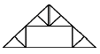
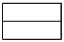
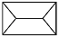
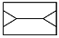
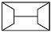
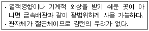
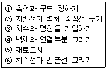
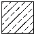
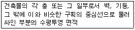

전산응용건축제도기능사 (2011-07-31 기출문제)
1과목: 건축구조
1. 목구조에서 토대와 기둥에 가장 적합한 맞춤은?
- 반턱 맞춤
- 메뚜기장 맞춤
- 짧은 장부 맞춤
- 통 맞춤
(정답률: 70%)

2. 계단 난간의 웃머리에 가로대는 가로재의 손스침이라고도 하는 것은?
- 챌판
- 난간동자
- 계단참
- 난간두껍대
(정답률: 64%)
3. 다음 중 케이블을 이용한 구조로만 연결된 것은?
- 절판 구조-사장구조
- 현수구조-셸구조
- 현수구조-사장구조
- 막구조-돔구조
(정답률: 86%)
4. 목재거푸집과 비교한 강재거푸집의 특성 중 옳지 않은 것은?
- 변형이 적다.
- 정밀하다.
- 콘크리트 표면이 매끄럽다.
- 콘크리트 오염도가 적다.
(정답률: 59%)
5. 뒷면은 영국식 쌓기로 하고 표면은 치장 벽돌로써서 5켜 또는 6켜는 길이쌓기로 하며, 다음 1켜는 마구리쌓기로 하여 뒷벽돌에 물려서 쌓는 방식은?
- 미국식 쌓기
- 네덜란드식 쌓기
- 프랑스식 쌓기
- 영롱 쌓기
(정답률: 63%)
6. 그림과 같은 양식 지붕틀의 명칭은?

- 왕대공 지붕틀
- 쌍대공 지붕틀
- 평하우스 트러스
- 핑크 트러스
(정답률: 61%)
7. 다음 중 열려진 여닫이문을 저절로 닫히게 하는 장치는?
- 문버팀쇠
- 도어스톱
- 도어체크
- 크리센트
(정답률: 83%)
8. 목재의 이음 및 맞춤에서 서로 빠지는 것을 방지하기 위해 원형 또는 각형의 가늘고 긴 일종의 나무못을 사용하는데, 이 보강재를 무엇이라 하는가?
- 촉
- 산지
- 쐐기
- 쪽매
(정답률: 42%)
9. 다음 중 모살용접이 쓰이지 않는 이음은?
- 플러그이음
- 덧판이음
- 겹침이음
- T형 이음
(정답률: 52%)
10. 지붕의 물매를 결정하는데 있어 가장 영향이 적은 사항은?
- 지붕의 종류
- 지붕의 크기와 형상
- 지붕재료의 성질
- 강수량
(정답률: 43%)
11. 내면에 균일한 인장력을 분포시켜 얇은 합성수지 계통의 천을 지지하여 지붕을 구성하는 구조는?
- 입체트러스 구조
- 막구조
- 절판구조
- 조적식 구조
(정답률: 79%)
12. 다음 중 막구조로 이루어진 구조물은?
- 금문교
- 장충체육관
- 시드니 오페라 하우스
- 상암동 월드컵 경기장
(정답률: 81%)
13. 용접결함 중 용접부분 안에 생기는 기포를 무엇이라 하는가?
- 언더컷(undercut)
- 보로홀(blowhole)
- 피트(pit)
- 피시아이(fish eye).
(정답률: 72%)
14. 횡력을 받는 벽을 지지하기 위해서 설치하는 구조물은?
- 버트레스
- 커튼월
- 타이아
- 컬럼밴드
(정답률: 73%)
15. 조적조에서 창문의 틀 옆에 세워대는 돌 또는 벽돌벽의 중간 중간에 설치한 돌을 무엇이라 하는가?
- 인방돌
- 창대돌
- 문지방돌
- 쌤돌
(정답률: 62%)
16. 직선부재가 서로 한점에서 만나고 그 형태가 삼각형인 구조물로서 인장력과 압축력의 축력만을 지지하는 구조는?
- 셸구조
- 아치구조
- 린텔구조
- 트러스구조
(정답률: 82%)
17. 벽량에 대한 설명으로 옳지 않은 것은?
- 내력벽 길이의 총합계를 그 층의 건물 면적으로 나눈 값을 의미한다.
- 보강블록구조의 내력벽의 벽량은 15cm/m2 이상이 되도록 한다.
- 큰 건물에 비해 작은 건물일수록 벽량을 증가할 필요가 있다.
- 벽량을 증가시켜 횡력에 대항하는 힘이 커진다.
(정답률: 79%)
18. 조적식구조에서 내력벽으로 둘러싸인 부분의 최대 바닥 면적은 얼마를 넘을 수 없는가?
- 40㎡
- 60㎡
- 80㎡
- 100㎡
(정답률: 74%)
19. 다음 그림은 지붕의 평면도를 나타낸 것이다. 박곡지붕에 해당하는 것은?(오류 신고가 접수된 문제입니다. 반드시 정답과 해설을 확인하시기 바랍니다.)




(정답률: 49%)
20. 목재 접합시에 쓰이는 금속 보강재 중에서 큰 보를 나타내지 않고 작은 보를 걸쳐 받게 하는 철물은?
- 꺽쇠
- 안장쇠
- 감잡이쇠
- 띠쇠
(정답률: 52%)
2과목: 건축재료
21. 콘크리트 타설 후 수분 상승과 함께 미세한 물질이 상승하는 현상은?
- 블리딩
- 풍화
- 응결
- 경화
(정답률: 78%)
22. 다음 중 2종 점토벽돌의 압축강도는 최소 얼마 이상인가?
- 10.78 N/㎟
- 20.59 N/㎟
- 22.65 N/㎟
- 24.58 N/㎟
(정답률: 63%)
23. 금속 중에서 비교적 비중이 크고 연하며 방사선을 잘 흡수하므로 X선 사용 개소의 천장, 바닥에 방호용으로 사용되는 것은?
- 황동
- 알루미늄
- 구리
- 납
(정답률: 68%)
24. 속이 빈 상자모양의 유리 둘을 맞대어 저압공기를 넣고 녹여 붙인 것으로, 옆면은 모르타르가 잘 부착되도록 합성수지 풀로 돌가루를 붙여 놓은 유리 제품은?
- 유리블록
- 프리즘 타일
- 유리섬유
- 결정화 유리
(정답률: 66%)
25. 목재의 원소 조성 중 가장 많이 포함하고 있는 원소는?
- 탄소
- 산소
- 수소
- 질소
(정답률: 69%)
26. 시멘트 분말도가 높은 경우의 특징으로 옳지 않은 것은?
- 수화작용이 빠르다.
- 시공연도가 좋다.
- 조기강도가 크다.
- 재료분리가 크다.
(정답률: 58%)
27. 다음 중 광명단과 관계있는 것은?
- 방청제
- 방부제
- 희석제
- 공기연행제
(정답률: 69%)
28. 얇은 금속판에 여러 가지 모양으로 도려낸 철물로서 환기공, 라디에이터 커버 등에 이용되는 것은?
- 코너비드
- 듀벨
- 논슬립
- 펀칭메탈
(정답률: 70%)
29. 아스팔트 방수층을 만들 때 콘크리트 바탕에 제일 먼저 사용되는 재료로 바탕과 방수층의 접착성을 향상시키는 것은?
- 아스팔트 펠트
- 아스팔트 프라이머
- 블로운 아스팔트
- 아스팔트 루핑
(정답률: 78%)
30. 모르타르 또는 콘크리트가 유동적인 상태에서 겨우 형체를 유지할 수 있는 정도로 엉키는 초기작용을 의미하는 것은?
- 풍화
- 응결
- 블리딩
- 중성화
(정답률: 64%)
31. 목재에 대한 설명 중 옳지 않은 것은?
- 심재는 목재의 수심에 가까이 위치하고 암색부분을 띠고 나무줄기에 견고성을 준다.
- 제재시는 건조에 대한 수축을 고려하여 여유 있게 계획선을 긋는다.
- 인공건조법은 다습저온의 열기를 통과시켰다가 점차로 고온 저습으로 조절하여 건조한다.
- 목재의 전수축률은 무늬결 방향이 가장 적고 길이방향이 가장 크다.
(정답률: 57%)
32. 다음 중 목재의 흠에 해당하지 않는 용어는?
- 옹이
- 껍질박이
- 연륜
- 혹
(정답률: 66%)
33. 유리의 광학적 성질 중 흡수율에 대한 설명으로 옳지 않은 것은?
- 깨끗한 창유리의 흡수율은 2~6% 이다.
- 두께가 두꺼울수록 광선의 흡수율은 커진다.
- 불순물이 많을수록 광선의 흡수율은 작아진다.
- 착색된 색깔이 짙을수록 광선 흡수율은 커진다.
(정답률: 50%)
34. 회반죽이 공기 중에서 굳어질 때 필요한 성분은?
- 탄산가스
- 산소
- 질소
- 수증기
(정답률: 73%)
35. 다음 중 같은 조건일 때 내구성이 가장 큰 석재에 해당되는 것은?
- 사암
- 석회암
- 대리석
- 화강암
(정답률: 76%)
36. 다음 미장재료 중 수경성 재료는?
- 회사벽
- 돌로마이트 플라스터
- 회반죽
- 시멘트 모르타르
(정답률: 61%)
37. 알루미늄의 특성에 대한 설명으로 옳지 않은 것은?
- 전기나 열전도율이 높다.
- 압연, 인발 등의 가공성이 나쁘다.
- 가벼운 정도에 비하면 강도가 크다.
- 해수, 산, 알칼리에 약하다.
(정답률: 69%)
38. 백색포틀랜드 시멘트와 종석, 안료를 섞어서 반죽하여 만든 것은?
- 코오킹(caulking)
- 테라코타(terra cotta)
- 테라조(terrazzo)
- 트래버틴(travertine)
(정답률: 50%)
39. 미장용 혼화재료 중 응결시간을 단축시키는 것을 목적으로 하는 급결제에 속하는 것은?
- 카본블랙
- 점토
- 염화칼슘
- 이산화망간
(정답률: 73%)
40. 목재의 벌목 시기로 겨울철이 가장 좋은 이유는?
- 목질이 연약하여 베어내기 쉽기 때문
- 사람의 왕래가 적기 때문
- 수액이 적어 건조가 빠르기 때문
- 옹이가 적기 때문
(정답률: 82%)
3과목: 건축계획 및 제도
41. 다음과 같은 특징을 갖는 배선공사는?

- 목재몰드 공사
- 금속몰드 공사
- 합성수지관 공사
- 가요전선관 공사
(정답률: 57%)
42. 조적조 벽체를 제도하는 순서로 가장 알맞는 것은?

- ① - ② - ③ - ④ - ⑤ - ⑥
- ① - ② - ④ - ⑥ - ⑤ - ③
- ① - ② - ④ - ⑤ - ⑥ - ③
- ① - ⑥ - ② - ③ - ④ - ⑤
(정답률: 71%)
43. 다음 중 동선의 3요소에 해당하지 않는 것은?
- 길이
- 빈도
- 하중
- 넓이
(정답률: 76%)
44. 단지계획에서 근린분구에 해당되는 주택 호수 규모는?
- 100 ~ 200호
- 400 ~ 500호
- 1000 ~ 1500호
- 1600 ~ 2000호
(정답률: 72%)
45. 기계환기방식 중 송풍기에 의하여 실내로 송풍하고 배기는 배기구 및 틈새 등으로 배출되는 환기방식은?
- 제1종
- 제2종
- 제3종
- 제4종
(정답률: 60%)
46. 다음 중 아래 그림에서 세면기의 높이를 나타내는 A의 치수로 가장 알맞은 것은?(그림파일 복원을 하지 못하였습니다. 정답은 2번입니다. 그림파일이 있느 원본을 가지고 계신 분께서는 관리자에게 메일로 보내 주시면 감사하겠습니다.)
- 600㎜
- 750㎜
- 900㎜
- 1000㎜
(정답률: 87%)
47. 다음 중 단면도에 관한 설명으로 옳은 것은?
- 건축물의 주요 부분을 수직 절단한 것을 상상하여 그린 도면이다.
- 건물 내부의 입면을 정면에서 바라보고 그리는 내부 입면도이다.
- 건축물의 창높이에서 수평으로 절단하였을 때의 수평 투상도이다.
- 건축물을 정투상도법에 의하여 수직투상하여 외관을 나타낸 도면이다.
(정답률: 61%)
48. 배수관 속의 악취, 유독 가스 및 벌레 등이 실내로 침투하는 것을 방지하기 위하여 배수 계통의 일부에 봉수가 고이게 하는 기구는?
- 사이펀
- 플랜지
- 트랩
- 통기관
(정답률: 85%)
49. 한식주택과 양식주택에 대한 설명 중 옳지 않은 것은?
- 한식주택은 좌식생활이며, 양식주택은 입식생활이다.
- 한식주택의 각 실들은 다용도 형식으로 되어 있어 융통성이 많다.
- 양식주택의 가구는 부차적 존재이며, 한식주택의 가구는 주요한 내용물이다.
- 양식주택은 개인의 생활공간이 보호되는 유리한 점이 있는 만큼 많은 주거 면적이 소요된다.
(정답률: 79%)
50. 다음 중 일조의 직접적인 효과로 볼 수 없는 것은?
- 광 효과
- 열 효과
- 환기 효과
- 생리적 효과
(정답률: 59%)
51. 그림과 같은 평면기호 명칭은?
- 오르내리창
- 붙박이문
- 붙박이창
- 격자문
(정답률: 72%)
52. 건축물의 입체적인 표현에 관한 설명 중 옳지 않은 것은?
- 같은 크기라도 명암이 진한 것이 돋보인다.
- 윤곽이나 명암을 그려 넣으면 크기와 방향을 느끼게 된다.
- 같은 크기와 농도로 된 점들은 동일 평면상에 위치한 것으로 보인다.
- 굵기가 다르고 크기가 같은 직사각형 중 굵은선의 직사각형이 후퇴되어 보인다.
(정답률: 82%)
53. 건축제도에 사용되는 선에 대한 설명 중 옳지 않은 것은?
- 굵은 실선은 단면의 윤곽 표시에 사용된다.
- 파선은 보이는 부분의 윤곽 표시에 사용된다.
- 1점 쇄선은 중심선, 절단선, 기준선 등의 표시에 사용된다.
- 2점 쇄선은 상상선 또는 1점 쇄선과 구별할 필요가 있을 때 사용된다.
(정답률: 80%)
54. 단위 공간 및 평면요소에 관한 설명 중 옳지 않은 것은?
- 건축공간은 개개의 단위공간이 모여서 전체를 구성한다.
- 단위공간 안에서는 인간의 동작에 필요한 공간이 요구 조건은 아니다.
- 어린이 방의 평면요소에는 취침, 공부, 수납 등의 공간이 요구된다.
- 부엌의 평면요소에는 개수대, 조리대, 가열대, 배선대등 조리작업공간이 요구된다.
(정답률: 83%)
55. 다음의 단면용 재료 표시 기호가 의미하는 것은?

- 석재
- 인조석
- 벽돌
- 목재 치장재
(정답률: 79%)
56. 건축 척도 조정(M.C : Modular coordination)의 기본 고려 사항으로 옳지 않은 것은?
- 우리나라의 지역성을 최대한 고려한다.
- M.C화 되더라도 설계의 자유도는 낮춘다.
- 가능한 국제적 M.C의 합의 사항에 맞도록 한다.
- 건물의 종류에 따라 그 성격에 맞추어 계획 모듈을 정한다.
(정답률: 77%)
57. 건축법상 다음과 같이 정의되는 것은?

- 바닥면적
- 연면적
- 대지면적
- 지상면적
(정답률: 55%)
58. 주택에서 거실의 한 부분에 식탁을 설치하는 형식은?
- 리빙 키친
- 다이닝 키친
- 다이닝 포치
- 리빙 다이닝
(정답률: 51%)
59. 명시도는 색의 3속성의 차가 커질수록 높아지는데, 색의 3속성 중 특히 명시도에 가장 영향을 많이 주는 것은?
- 색상
- 채도
- 명도
- 잔상
(정답률: 78%)
60. LPG에 대한 설명 중 옳지 않은 것은?
- 공기보다 가볍다.
- 액화석유가스이다.
- 주성분은 프로판, 프로필렌, 부탄 등이다.
- 석유정제 과정에서 채취된 가스를 압축 냉각해서 액화 시킨 것이다.
(정답률: 87%)